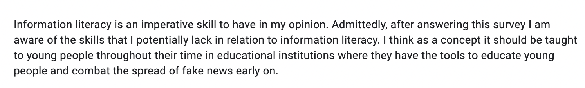
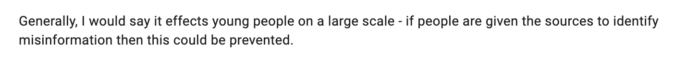

Information Literacy Skills
Information literacy skills largely consist of the following, the ability to: find, identify, critically evaluate, analyse and apply information.
In the survey carried out for the purpose of this website, users were asked if they were unfamiliar or less familiar with any of these skills compared to others:
3 users said they struggled with analysing.
3 users said they struggled with evaluating.
2 users said they struggled to find sources.
1 user found it difficult to identify credible sources.
Remaining users were unsure.
This section will, therefore, go through each skill carefully in order to provide additional help in overcoming the struggles surrounding the understanding of each skill.
Find
The Oxford English Dictionary
(OED) defines
'find' as: "to discover or obtain by searching".
In information literacy terms, the ability to find is a crucial one. Depending on what kind of information you are looking for, you need to be aware of how to find this information, e.g. where is the best place to look that is going to give you the best results the fastest? For example, if you are writing an essay for school or for college/university, you may turn to resources such as Google Scholar (insert link), which will direct you to a number of academic papers on similar topics. However, this process can also be made more effective by using the advanced search option (which is available on most search engines). This allows users to adapt the details of their search to fit a more narrowed scale by selecting factors such as dates they are interested in, or key words to highlight. Here is a useful guide to using advanced search tools on google:
'Google Search Help'. Being able to find the correct information that goes towards a purpose is an imperative skill to have; especially in a society shrouded by so many sources of false information. Thus, being able to use tools, such as advanced search, can help eliminate the risk of falling into the trap of fake news- especially if you stick to reliable places like Google Scholar, or academic libraries online, etc.
Idenitfy
The Oxford English Dictionary
(OED) defines
'identify' as: "To discover, distinguish, isolate; to locate and recognize or describe."
While the skill of identifying may seem similar to the skill of finding, there is a difference between the two. As previously discussed, it is one thing to find a potential source of information, however if you plan to use this information you have found, you must be able to identify both if it is necessary- does it add to your purpose?- and is the information reliable? As discussed in the 'What is Fake News?' section of this website, users who took part in the survey were asked what were some key characteristics of a source of fake news, some of these answers included: "spelling errors", "blown up headlines", "hyperbole", and more. This demonstrates users ability to identify as they were aware of things to look out for, key indicators. Thus, it is useful when finding information to be aware of key characteristics that may be present for you to identify in order to determine whether the information you are looking at is reliable or not/ useful or not. Here is a link to a useful article that explores the skills of identifying in more depth:
'Identify: Understanding Your Information Need'
Evaluate
The Cambridge Dictionary
(CD)defines
'evaluate' as: "to judge or calculate the quality, importance, amount, or value of something".
The ability to critically evaluate is one that people often struggle with. In simple terms, the ability to evaluate refers to the ability to break things down into smaller parts in order to form an opinion that is backed up by evidence in a sort of balanced debate. For example, if you were asked to evaluate a specific argument for a piece of work, essay, etc you should look at both sides of the argument provided in order to pick one that you agree with more, always having the information there to support
why you came to this conclusion. A few ways that could make this process of evaluation easier is creating a pros and cons list, making a spider diagram of different argument strands, etc. Here is a link to a useful guide to critical evaluation:
'Essay Question Words:"critically evaluating review" '
Analyse
The Oxford English Dictionary
(OED) defines
'analyse' as: "To differentiate or ascertain the elements of (something complex) in order to determine its structure or nature, and hence to explain or understand it; to examine closely and methodically for the purpose of interpretation; to subject to critical or computational analysis".
The ability to analyse is one often confused with evaluation skills. In short, analysing skills can be split up into smaller sections that are:
compare, contrast and connect. In analysing information you should be able to compare it to other pieces of information and ask yourself questions such as, what similarities are present?, how does it differ from other information?, how might these similarities and differences make this information useful? This allows for useful notes to be made about the information you are presented with and can allow you to view it/ approach it in a different way, all of which can thus be used to make a connection between issue and information. There are some useful tricks that can make the analysing process easier. For example, if you were given a text or a poem to analyse, you could: make text annotations with highlighters and images to both make the process feel more fun and also help you make text associations with colours, etc, you could also create short summaries for each chapter/ stanza, you could make a mind-map with different thoughts and ideas, and more. Here is the link to a useful study guide when it comes to analysing information:
'How to Analyze Texts'.
Apply
The Merriam-Webster Dictionary
(MWD) defines
'apply' as: "to have relevance or a valid connection".
All of the aforementioned skills are useless without the ability to apply information correctly. Information should, thus, be applied and organised based on the relationships between ideas; information is only useful when in the correct place. For example, statistics and information about the rise of fake news is useful information when placed next to corresponding information about fake news; it would be completely useless if placed in an article about cars. Therefore, a helpful way to ensure you are applying information to the necessary issue/topic is to firstly write down the overarching issue and make a list of similar topics that relate to the main issue, stay within the bounds of these topics so that the greater issue does not become too broad to the point where information becomes lost and incoherent. It is important to have a focal point to always return to and show how newly gathered information can be applied to this focal point. Trigger phrases such as, 'this applies to… because…', 'this is relevant because...', 'this can be used in relevance to... due to…' can all be useful in making sure you are consistently applying information to the main issue. Here is the link to a useful guide on applying information:
'Putting information together'.
How do these skills relate to the combat against fake news?
Developing information literacy skills can help users identify fake news sources in an online space. It can also aide us in our everyday life in education, citizenship, workspaces, health care spaces, etc.
Information literacy can help us better understand and analyse the world around us. It can also help us develop critical thinking skills that can be carried through education and into the workplace. In terms of healthcare, there is so much misinformation and scaremongering via fake news online about the health care system in particular - look to COVID-19 pandemic when the spread of misinformation was rife- thus the development of information literacy skills can help users gain confidence online when searching for reliable sources on topics that matter to them.
Information literacy skills are also imperative in contributing to online safety. Users must be aware of their digital footprint and privacy, especially in things like online transactions etc. It is so easy to be hacked/doxed online, if users are aware of what signs to look for then this can become a preventable issue.
Information literacy skills can also aide users in learning how to be ethical online. Users of any online space must be aware of the fact that there is no such thing as 'deleting' something from the online sphere, once it is posted it exists forever in some capacity. There are so many examples of public figures being 'cancelled' online for things like tweets they have posted a decade ago that are considered offensive in todays society and are brought back up again to use against these figures. Thus, it has become even more imperative to be ethical online nowadays due to the risks that publicly airing things like political opinions etc brings, For example, something you posted on Facebook when you were fifteen could go against you in a job interview when you are thirty.
Here are some examples of what survey participants thought of information literacy's potential role in defeating fake news:



« Previous
Next »